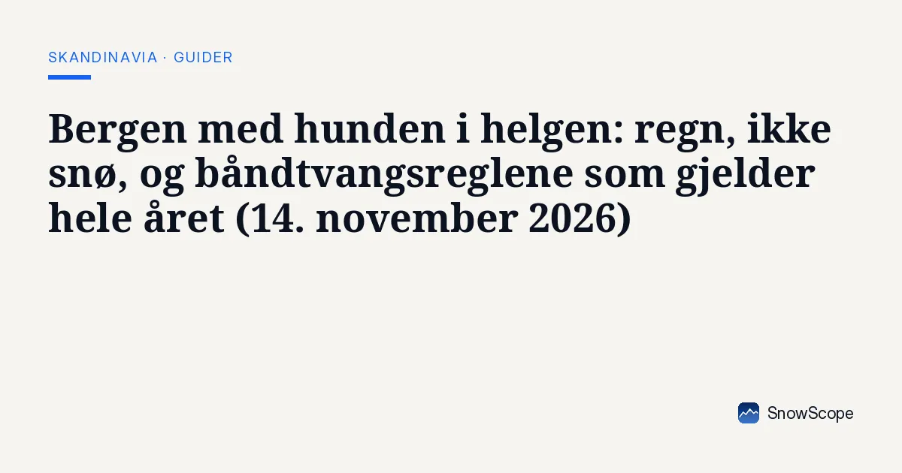
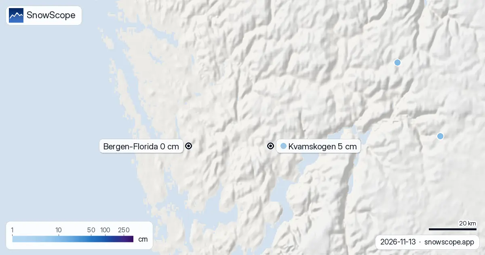

Bergen med hunden i helgen: regn, ikke snø, og båndtvangsreglene som gjelder hele året (14. november 2026)
Bergen forblir snøfritt når november begynner. Stasjonen ved Florida rapporterte ingen snødekning fredag, mens den nærmeste målte ansamlingen ligger på 5 cm på de høyere bakkene 35 km innland på Kvamskogen. Denne helgen bringer regn i stedet—kraftig regn søndag med 38 til 40 mm forventet—så hundetur blir våt under føttene i stedet for snøkledt. Det som betyr mer for hundeeierne er å kjenne Bergens strenge hunderegler, som til forskjell fra de fleste norske kommuner ikke endrer seg med årstiden.
Se snøprognosen for Bergen direkte i SnowScope-appenSnødybde, puddervarsler og 3D-kartet, gratis.
År-rundt bånd i sentrum og på mange stier
Bergen håndhever hunderegler hver dag av året. Innenfor bysentrum må hunden ha bånd til enhver tid. Over de offentlige parkene utenfor sentrum kreves bånd i dagtid og kveldstime. Regelen er spesielt streng på de påbygde stiliene og merka stiene som krysser Fløyfjellet, Kanadaskogen, Langeskogen, Løvstien, Landåsfjellet og flere andre populære gåområder rundt byen.
Dette er forskjellig fra de fleste norske kommuner, hvor sesongbaserte regler slapper av når våren kommer. I Bergen forblir reglene de samme enten det er november eller juni.

Hvor hunden din kan løpe fritt
Bergen kommune vedlikeholder fire gratis, gjerdede hundeleikeplasser hvor hunden din får løpe løs uten bånd. Disse ligger ved Liavatnet i Åsane, på Løvstien like over Solheimslien, ved Tveitevannet mellom Fantoftåsen og Vilhelm Bjerknes' vei, og ved Tennebekk langs Gamle Tennebekksveien. Alle fire er åpen tilgang og krever ingen bestilling eller gebyr.
Disse leikeplassene er ditt beste alternativ når du vil at hunden skal ha plass til å bevege seg fritt. Utenfor disse gjerdede områdene må bånd holdes på i parkene og stiliene.
Skiløyper: regler venter på at snø kommer
Bergen har fem tent skiløyper på Fløyen, Totland, Frotveit, Hjortland og Gullbotn. Når snø kommer og løypene blir skibare, må hunder være på bånd mens løypene er i bruk. Hundeavføring må også ryddes fra de forberedte løypene og omgivelsene deres.
Denne helgen, med regn varslet og bar mark i byen, er disse reglene fortsatt uker unna. Selv den nærmeste snøen på Kvamskogen—5 cm målt fredag—vil sannsynligvis krympe når regn faller. Skiløypene vil ikke trenge å håndheve hundebegrensninger ennå.
Hva du kan forvente denne helgen: svært vått, ikke hvitt
Fredag brakte ingen snø til Bergens lavlandet. Lørdag vil se regn bygge seg opp gjennom dagen, med temperaturer mellom 7 og 8 °C. Søndag er den våte dagen: 38 til 40 mm regn er varslet, med tilsvarende temperaturer. Mandag fortsetter regnet men avtar.
For hundetur betyr dette gjørmete stier og våte hundelag. De bratte, skogkledd rutene på Fløyfjellet er glatte av fallne blader når det er vått, og trapper blir farlige. Hold bånd kort og pass deg på fotefestet, spesielt på nedoverbakken.
Hvis du vil ha snø denne helgen, må du reise
For å finne snø til en helgetur, må du kjøre innland til Kvamskogen, 35 km unna og 455 m høyere. Selv der, med bare 5 cm målt fredag og regn som faller gjennom helgen, er dekket tynt og vil krympe. Høyere mark lengre unna—Mjolfjell på 695 m, 95 km unna, har 10 cm—gir bedre snø, men er en halvdagstur.
For en lørdag eller søndag med hunden din er den realistiske planen en våt tur på Bergens lokale stier. Pakk regntøy for deg selv og ta med et håndkle for å tørke hunden når du kommer hjem.
Tips til skiløpere
- Hold bånd kort på våte, bladdfulle trapper rundt Fløyfjellet: bakken under bladene er glatt og vanskelig å se.
- Søndag er dagen med mest regn—cirka 38 til 40 mm forventet. Planlegg kortere turer eller ta med paraply og vanntett jakke for deg selv.
- Gjørme dekker de fleste stiene innen søndag kveld. Ta med et håndkle eller gammelt teppe i bilen for å beskytte polstringen på hjemturen.
- De fire gjerdede hundeleikeplassene er ditt beste alternativ for å la hunden løpe løs uten bånd, regn eller sol, hele året.
- Hvis du hører at snø kommer i løpet av de neste dagene, sjekk Fløyens tent løype: når den åpner for skisport, må hunder være på bånd der, så planlegg besøket ditt utenfor skiøkta eller bruk hundeleikeplassene i stedet.
Om tallene
Snødybdene for skistedene er det dypeste snødekket i de øvre bakkene på datoen som vises; de er anslag for et område, ikke en måling i ett punkt. Prognoser kan endre seg. Les alltid det offisielle snøskredvarselet før du kjører utenfor preparert løype.
Siter denne rapporten
For forskning, undervisning eller presse: tallene og diagrammene kan brukes fritt under CC BY 4.0 med denne kildehenvisningen.
SnowScope (2026), Bergen med hunden i helgen: regn, ikke snø, og båndtvangsreglene som gjelder hele året (14. november 2026), https://snowscope.app/blog/nb/2026/11/bergen-dog-walks-weekend-14-november-2026.html, hentet 2026-11-14
SnowScope (Atlas Labs). (2026, November 14). Bergen med hunden i helgen: regn, ikke snø, og båndtvangsreglene som gjelder hele året (14. november 2026). SnowScope snow reports. https://snowscope.app/blog/nb/2026/11/bergen-dog-walks-weekend-14-november-2026.html
BibTeX
@misc{snowscope2026bergendogwalksweekend14n,
author = {{SnowScope (Atlas Labs)}},
title = {Bergen med hunden i helgen: regn, ikke snø, og båndtvangsreglene som gjelder hele året (14. november 2026)},
year = {2026},
month = nov,
howpublished = {\url{https://snowscope.app/blog/nb/2026/11/bergen-dog-walks-weekend-14-november-2026.html}},
note = {Published 2026-11-14 13:29 UTC; accessed 2026-11-14}
}· CC BY 4.0 · Metoder, data og verktøy →
Følg Bergen
Gratis: en melding når nysnø er på vei, og prognosen hver morgen.